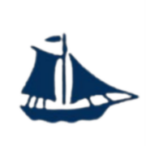

홈 > 브랜드 매거진 > Moeder Babelutte
Moeder Babelutte
무더 바벨뤼터(Moeder Babelutte)는 전통 바벨뤼터(꿀맛 토피)와 초콜릿·프랄린을 파는 벨기에 가족경영 제과 체인이다.
산업 분야 식음료 · 공개 등급 자료 기반 · 브랜드 평가 4.1 ★

한눈에 보는 브랜드
무더 바벨뤼트(Moeder Babelutte)는 벨기에 서플란데런 해안에서 전통 버터 토피(babelutte)를 만드는 가족 운영 제과 브랜드다. 19세기 후반 어촌 마을 헤이스트에서 로잘리 데스메트가 폴더 버터를 녹여 따뜻한 토피를 버터 종이에 싸 팔던 노점에서 출발했고, 영국·프랑스 관광객과 아이들이 그를 '바벨뤼트 엄마'라 부른 데서 이름이 굳어졌다.
첫 번째 전환점은 데스메트 가문이 단일 노점을 해안 도시와 브뤼헤로 확장해 정식 점포망을 갖춘 시점이며, 두 번째는 2019년 헤이스트에 카페형 매장을 열어 판매업에서 체류형 공간으로 외연을 넓힌 변화다.
브랜드 관점
이 브랜드의 핵심은 한 지역 향토 군것질을 백 년 넘게 끊기지 않고 상업화한 연속성에 있다. 바벨뤼트는 사탕수수당·캐러멜·글루코스 시럽·버터·약간의 소금을 끓여 손으로 당기고 비틀어 손가락 굵기 막대로 늘인 뒤 잘라 흰색과 파란색 버터 종이에 이중으로 싸는 노동집약적 수제 방식으로, 대량 생산 캔디와 차별화된다.
전략적으로는 헤이스트·크노케·브뤼헤 같은 관광 동선에 점포를 배치해, 북해 해안의 향수와 유네스코 도시 브뤼헤의 방문객 흐름을 토피·쿠베르동·누가·트뤼플·해산물 모양 초콜릿 같은 선물용 군것질로 연결한다. 시장 함의는 명확하다.
향토 식품도 원형 레시피 보존과 포장·점포 경험 설계가 결합되면 관광 기반 프리미엄 기념품으로 자리잡을 수 있다는 점이다. 한국 독자에게는 경주 황남빵이나 부산 어묵처럼 지역 명물을 가문 단위로 계승하며 카페와 결합해 도시 브랜드로 키운 사례로 읽힌다.
시작과 성장
발상지는 19세기 후반, 영국·프랑스 상류층이 별장과 호텔을 짓던 벨기에 북해 해안의 신흥 휴양지 헤이스트였다. 목수의 아내였던 로잘리 데스메트(1841~1912)는 집안 전래 방식과 인근 폴더 지대의 버터를 써서 따뜻한 토피를 만들어 버터 종이에 싸 휴양객에게 팔았다.
끈적한 토피를 입에 물면 말을 못 한다는 데서, 수다를 뜻하는 플람스어 '바벨런'과 끝남을 뜻하는 말이 합쳐져 바벨뤼트라는 이름이 붙었다고 전해진다. 아이들이 그를 '바벨뤼트 엄마'라 부르며 노점 이름이 되었고, 데스메트 가문이 대를 이어 레시피를 지키며 해안 도시들과 브뤼헤로 점포를 넓혀 갔다.
브뤼헤 점포는 1994년부터 가족 구성원이 운영해 왔고, 2018년 여름 이후 헤이스트 매장을 커피하우스로 키운다는 구상이 구체화되어 2019년 4월 헤이스트 흐라프 뒤르셀란 6번지에 첫 카페가 문을 열었다.
브랜드 아이덴티티
정체성의 축은 '원형 레시피를 지키는 가족 가게'라는 점이다. 한 지역에서 시작된 향토 토피를 가문이 직접 만들고 판매한다는 서사가 브랜드 신뢰의 근간이며, 흰색과 파란색 버터 종이라는 일관된 포장이 시각적 표식 역할을 한다.
25년 넘게 이어 온 운영을 강조하는 메시지처럼, 보이스는 향수와 손맛, 해안 정서를 앞세우는 따뜻하고 전통 지향적인 톤이다. 타깃은 브뤼헤와 크노케-헤이스트를 찾는 관광객, 선물·기념품 수요층, 그리고 어린 시절 해안에서 먹던 맛을 기억하는 현지 소비자다.
카페 매장에서는 일리 커피와 핫초콜릿, 가벼운 식사를 더해 격조 있되 편안한 체류 공간을 지향한다.
제품과 서비스
취급 품목은 전통 바벨뤼트 버터 토피를 중심으로 초콜릿, 프랄린, 쿠베르동, 누가, 트뤼플, 해산물 모양 초콜릿 등 벨기에 전통 군것질과 선물·기념품용 제품을 두루 갖춘다. 관광객을 겨냥한 포장 선물 세트도 주요 품목이다.
채널은 브뤼헤 볼레스트라트 등 직영 점포와 헤이스트의 카페형 매장, 온라인 판매가 함께 쓰인다.
현재 상태
운영 주체는 벨기에 서플란데런의 데스메트 가문 계열 가족 사업체이며, 브뤼헤와 크노케-헤이스트를 비롯한 해안 도시에서 점포와 카페를 운영 중이다. 점포 수의 정확한 최신 집계와 매출 등 재무 규모는 미공개다.
타임라인
정리된 연도형 이벤트가 없습니다.
BI/CI 변천사
함께 읽을 브랜드
 식음료 · 매거진 완성스타벅스
식음료 · 매거진 완성스타벅스스타벅스는 커피를 팔면서 동시에 사람들이 머무는 시간과 공간의 감각을 설계한다. 음료는 핵심 상품이지만, 브랜드의 차별성은 매장 안에서 보내는 시간, 주문 언어, 조...
*o
*ouch*
식음료 · 편집 검수*ouch**ouch*는 2025년에 기록된 Burger Branding 계열의 브랜드 아이덴티티 사례입니다. Oker가 아이덴티티 작업의 디자이너로 기록되어 있습니다. 공개...
 식음료 · 자료 기반투썸플레이스
식음료 · 자료 기반투썸플레이스투썸플레이스(A Twosome Place)는 2002년 출범한 한국의 프리미엄 디저트 카페 브랜드로, 현재 칼라일그룹이 소유한다.
 식음료 · 자료 기반공차
식음료 · 자료 기반공차공차(Gong Cha)는 대만에서 시작된 버블티 브랜드의 한국 사업을 운영하는 공차코리아의 브랜드다.
 식음료 · 자료 기반Venchi
식음료 · 자료 기반Venchi벤키(Venchi)는 1878년 설립된 이탈리아의 프리미엄 초콜릿·젤라토 제조 기업이다.
맥도날드는 가장 평범한 소비재를 세계 어디서나 읽히는 대중문화의 기호로 바꾼 브랜드다. 햄버거와 감자튀김은 단순한 메뉴지만, 맥도날드는 속도, 표준화, 접근성, 익숙...
 식음료 · 매거진 완성앱솔루트
식음료 · 매거진 완성앱솔루트앱솔루트는 보드카 병 하나를 광고와 예술의 반복 가능한 캔버스로 만든 브랜드다. 제품 형태의 일관성을 유지하면서도 캠페인마다 다른 문화적 해석을 입혀, 단순한 병을...
버거킹는 미국의 식음료 브랜드로, 맛, 메뉴 구성, 패키지, 매장 또는 유통 채널이 함께 브랜드 경험을 만드는 영역입니다.